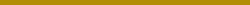

Floresta tropical
As florestas são áreas isoladas e arborizadas que
podem ser encontradas no mundo Pokémon. Eles tendem
a ter Pokémon do tipo Grama, Voador e Inseto, embora
Pokémon baseados em animais que vivem na floresta,
como o Zigzagoon, possam ser encontrados neles. Chuvas
frequentes caem na região de Hoenn, nutrindo as flroestas
tropicais e a grama alta que ali cresce.